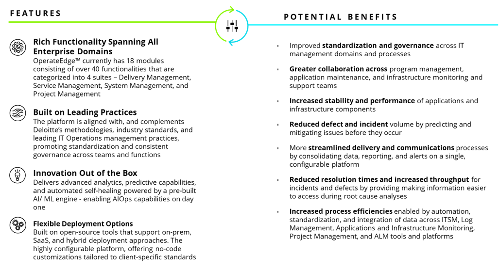

OperateEdge™ is Deloitte’s proprietary IT operations management and service delivery platform. OperateEdge™ was designed and developed based on Deloitte’s 50+ years of service excellence and innovation in managing enterprise IT operations. The platform brings together recognized industry standards and leading practices, Deloitte’s proven Operate and Service delivery methods, human-centered design, as well as cutting-edge Artificial Intelligence (AI) and Machine Learning (ML) innovations.
Using open APIs, OperateEdge™ seamlessly integrates with all leading IT Service Management, Cloud Platforms, Log Management, DevSecOps, and Infrastructure and Application monitoring tools and platforms. These APIs integrate disparate datasets from across the operating environment into preconfigured templates and data model. These integrated datasets are then exposed to the platform’s out of the box AIOps engine and self-healing process automation tools, helping to improve performance and reliability, reduce costs, and promote standardization across all IT operations domains.
The Delivery Management suite is a set of tools and dashboards that provide transparency across a broad range of application maintenance and delivery processes. The suite includes release management, risk and issue management, testing, manages service delivery enabled through AI and cognitive technologies for effective transition management, knowledge management, risk management, program management and development of applications.
The OperateEdge Service Management suite brings together data from across multiple operational domains and helps drive deeper insights into incidents, service requests, and change requests. The suite provides pre-configured dashboards consisting of widgets that summarize metrics, trends, ticket types, and ticket statuses across different periods, business areas, systems, and sub-systems.
The System Management suite is a set of dashboards, tools, and capabilities that consolidates server and application monitoring functions, including log management, batch operations, web analytics, and license and certificate management. The suite leverages AI-Ops driven insights to increase transparency into application and infrastructure health, predict future performance, accelerate root cause analysis, and implement corrective actions.
The project management suite provides customizable tools to establish and track the hierarchy of client contracts, purchase orders, initiatives, and artifacts, and centrally manage the roles of PMO staff and approvers, initiative owners and artifact owners at the contract, purchase order, and artifact level.
Powered By Deloitte